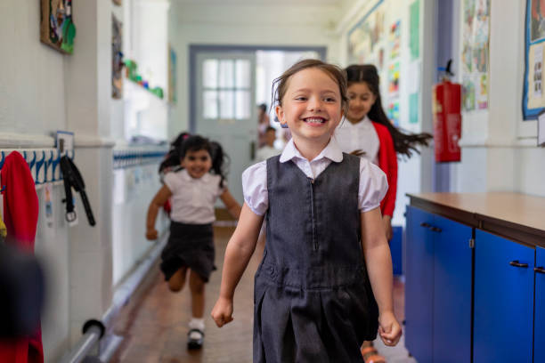
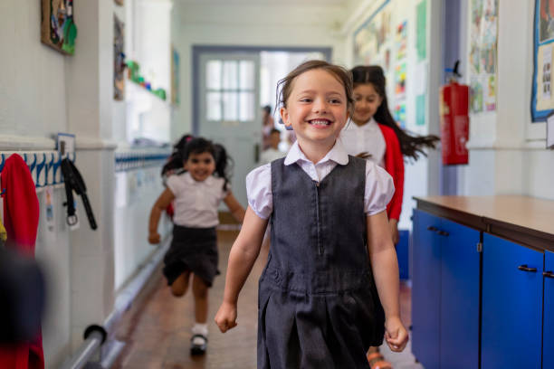
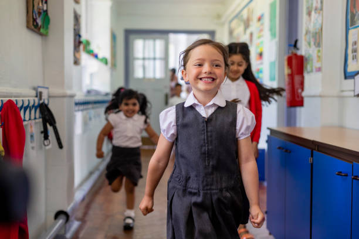

A very warm welcome to William Byrd Primary Academy’s website. I am very proud to be Head of our wonderful school and have the privilege of working with a dedicated and talented team of staff, hard-working and engaging pupils and supportive and proud parents.Our website gives you a feel for what we are all about and I hope you find it informative and useful. However, to appreciate what William Byrd is really like, you need to see the school in action and we welcome visitors and would love to show you around.I look forward to seeing you soon.
Request Viewing

OFSTED defines personal development as the development of a pupil's individual skills, attitudes, and understanding. This includes the development of self-awareness, self-esteem, and emotional intelligence, as well as the development of skills related to communication, teamwork, and critical thinking.At Hayes Home we strive to give all pupils opportunities to build confidence, life skills and memories. We do by offering:
We want all children to thrive, and we put a huge emphasis on the experience that each child will get by being a pupil at William Byrd. We call this, "The Hayes Home Experience." See below the opportunities and activities that we will ensure every pupil has before they leave our doors at the end of Year 6.
Our Core Ethos Our Core Values

| Senior Leadership Team | |
|---|---|
| Head of school | Mrs Pari |
| Incharge of school | Ms Harsons |
| Deputy Head of school | Mr Paytons |
| Assistant Head of school | Ms Anna |
| Supervisor of school | Ms Neha |
| Teaching staff | Ms Swallow |